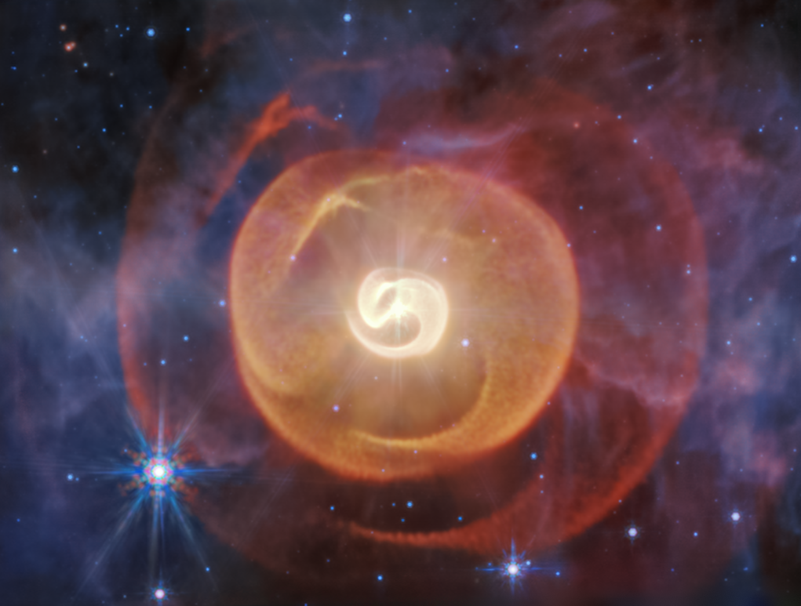

IMAGE: Wolf-Rayet Binary | IMAGE CREDIT: NASA, ESA, CSA, STScI; Science: Yinuo Han (Caltech), Ryan White (Macquarie University); Image Processing: Alyssa Pagan (STScI)
Dusty's Log Entry:
- Type: extremely hot, massive star
- Temperature: 30,000 - 200,000 K
- Mass: about 20+ Suns at birth
- Lifespan: few hundred thousand years
- What's Next: supernova, possibly a gamma-ray burst
Wolf-rayet stars mostly form from O-class main sequence stars that are massive. The wolf-rayet is a rare, super-massive star in a late, fast stage of life. The star is formed when strong winds blow away its outer hydrogen layers. This exposes the burning helium, carbon, nitrogen, and oxygen to the surface. This exposure creates beautiful and deeply colored clouds around the star. These clouds were carried by heavy winds, allowing the star to first be discovered in 1867.
Examples of Wolf-Rayet Stars include Gamma Velorum and WR 124.